FEATURED PROJECT
Austin Adventures
Austin Adventures is my final project completed in two weeks while I was a student at The Iron Yard Front-End Engineering Course.
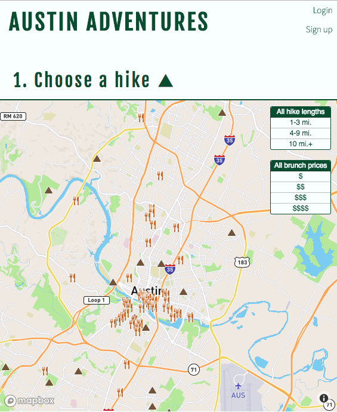
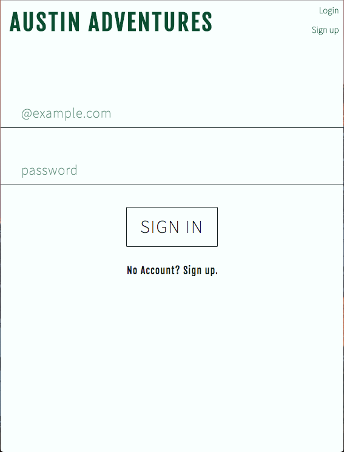
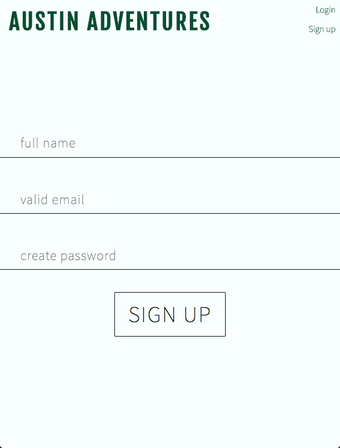
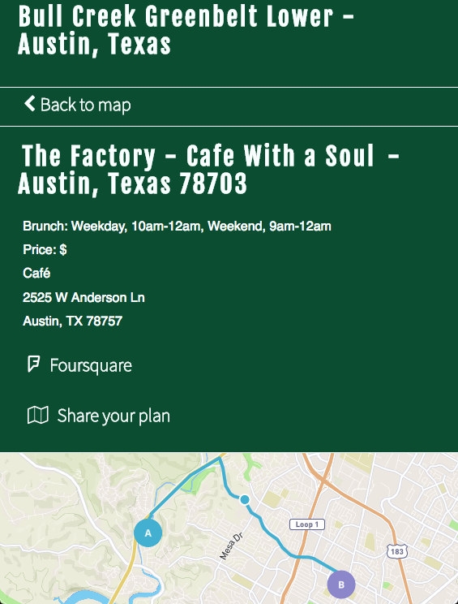
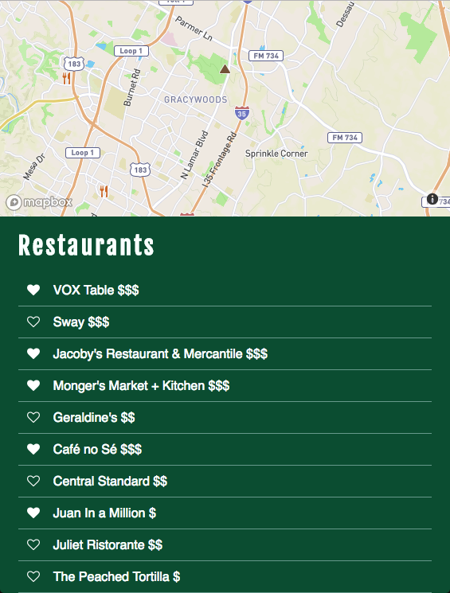
Inspiration
I was inspired to work on this project because of a need that I have had when traveling and moving to new areas. Where to find a good hike and a great brunch spot to go to afterwards. I moved to Hawaii in 2012 and lived with my sister on Oahu. We went hiking on average once a week. We usually cooked Paleo at home, but every once in a while we went out to eat after our hikes. It was a part of the culture for many people on the island and visiting vacationers. Some genius woman in Honolulu thought of the idea to cater to people that want hiking and food without the hassle of planning and transportation. Hiking Hawaii will advise your, drive you, lead you on a hike, pack a picnic or take you back to the restaurant all for a fee. My sister and I immediately thought that we could do that for ourselves without having to pay locals to tell us where to go and what to do. Cinnamons, Cream Pot, Lanikai Juice, the list goes on. There are so many great places to eat with hikes nearby if you know where to go. We bought the book Hiking Hawaii to help tell us where to go. We became amazing tour guides for our friends, family, and random acquaintances that my sister would meet. When I moved back to Dallas, I wanted to continue the hiking tradition, but finding good places to hike seemed impossible in DFW. It took a lot of searching. Several places my friend Claire and I hiked were actually dirt bike trails, not exactly my idea of a good hike. Then I went on D Magazine's website and the Dallas Observer to look for good brunch restaurants to go to. It would take all week to plan out our Sunday Funday! Then I moved to Austin and became a front end engineer. My brother asked me what I spent most of my free time doing. He said that should be the inspiration for my first personal project. An app to pair hikes and brunches together was born there. I really thought that it would be silly and not worthy of a final project. However, my project was voted most likely to be used by everyone that saw it!
Process
I began by thinking about what I would want in an app to help me plan a Sunday Funday. Then I began researching other mapping apps and websites with restaurants and hiking. I found that nothing grouped these two things together and that my idea was unique and interesting. I thought that I would do everything in one page and drew a wireframe for it after brainstorming all the features that I could think of. I presented my project idea to the group after 3 days of research and development. I also discussed the full potential of my app with my instructor. After it was approved I thought about the most important part of the app...the data. I wanted the hikes and restaurants in my app to be a perfect list of awesome Austin locations. I found an API called TrailsAPI to begin the hiking part of my app. However, after researching restaurants and API filters that were already available, I realized that I wanted to make my own API. This was a labor of love. As a front-end engineer I did not realize that the backend students know how to do this easily. I learned so much about APIs during this process. I say that creating this brunch API took a day and some hours. This is true. I spent my first full project day researching restaurants in the Austin area, asking for recommendations, looking at reviews in the Austin Chronicle, and determining what times these places served brunch.
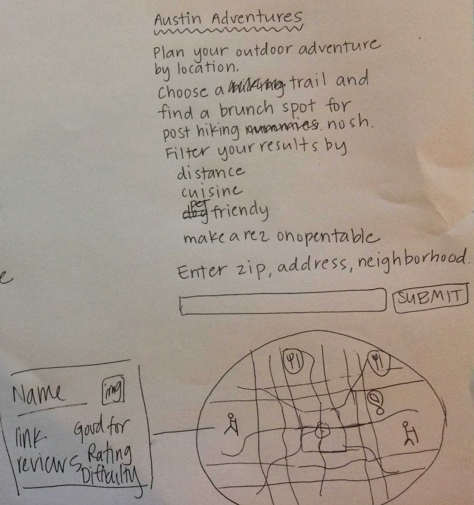
Tech
This is a single page application using React-Redux. I used Mapbox to get the map, directions, icons, and icon filters. Mapbox was recommended by my little brother who is developer. There was very little documentation on implementing Mapbox with React-Redux, so this was a great learning opportunity. I learned a lot about how to do that using two reducers. I am using backendless to register and login users and also save favorite hikes and restaurants. I can Google restaurants nearby, but I don’t want Taco Bell. I created my own restaurants API to include valuable planning information. I included a Foursquare ID with each restaurant to get updated restaurant information. I used lodash to filter the brunch and hike information.
live version
PREVIOUS WORK
Bring the Band
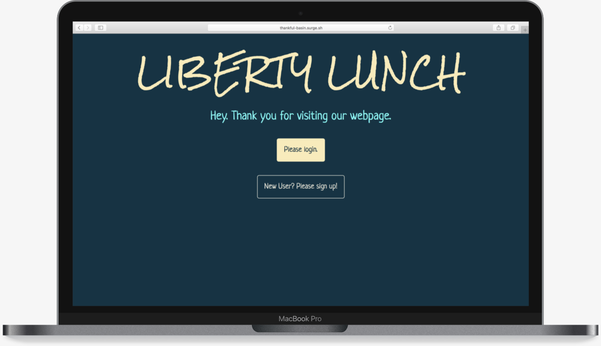
Bring the Band is an app with a user signup/login component. Once logged in, users can search and vote for bands. When the user votes for a band, the data is saved in a Backendless table. This app uses the Spotify API for band data.
live version
Blogging App
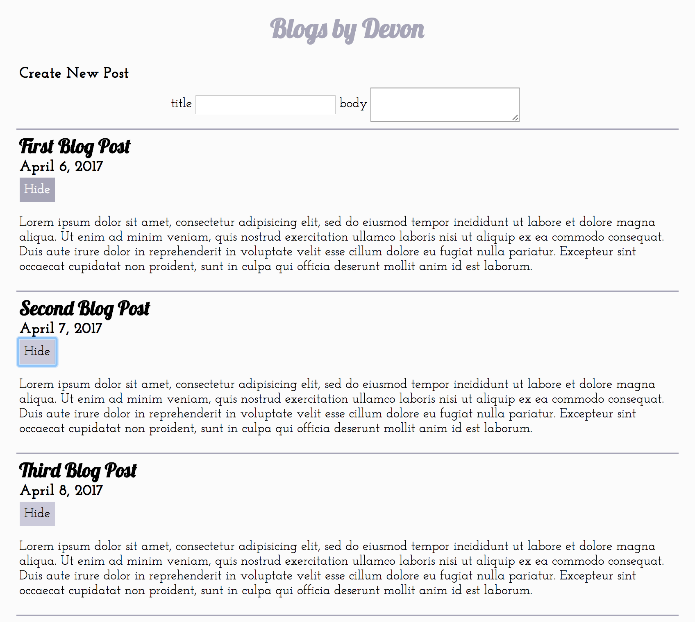
Blogging App is an single page application using React-Redux with an input for a blog title and body. Each blog post has a hide button to collapse the body using local state.
live version
Cycling Business Group Project
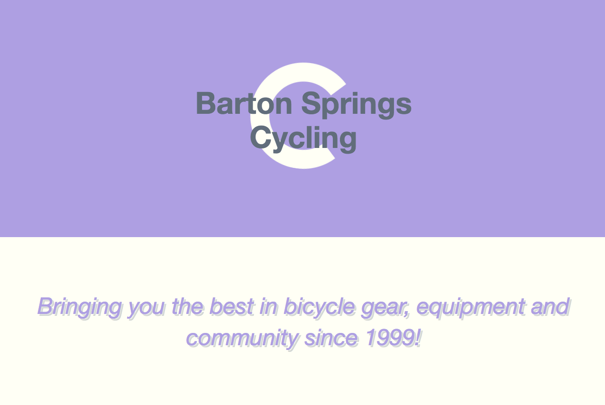
Cycling Business is a single page application using JavaScript. It is a group project completed with two other Iron Yard students. The "client page" is responsive based on wireframes provided by curriculum and developed mobile-first using SASS compiled to CSS. I contributed to the project by adding the HTML, favicon, and formatting images from Unsplash.
live version
Markdown Preview
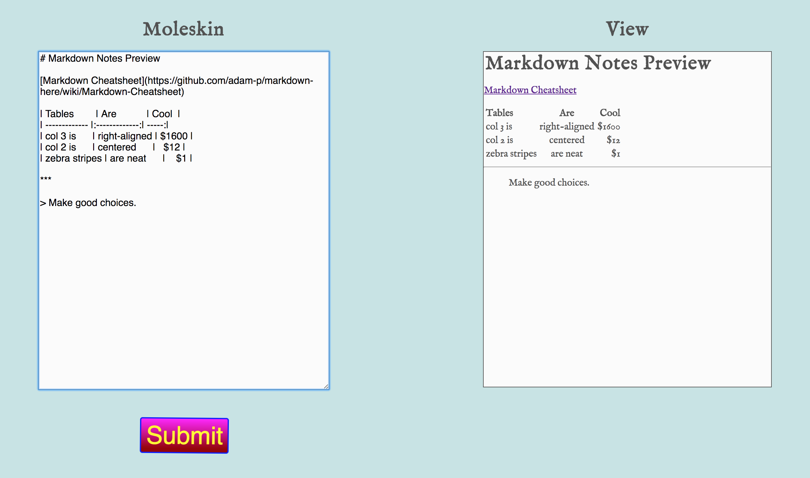
Mardown Preview is an app to create markdown friendly notes Using React, Redux, React Router, and a webpack. It uses multiple react components to present a text area to the user where they can type a note and submit to save the note on the server. Notes need to be longer than 50 characters, anything less should not be sent to backendless.
live version
Quiz App
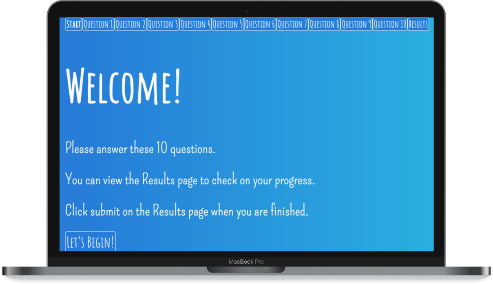
Quiz App is a multipage application with react-router and redux. It contains a start page, a question page, and a results page. The results page shows the user all of the questions and their answers in a tabular format. If they got to the results page without answering a question it is highlighted in CSS.
live version
Three In One App
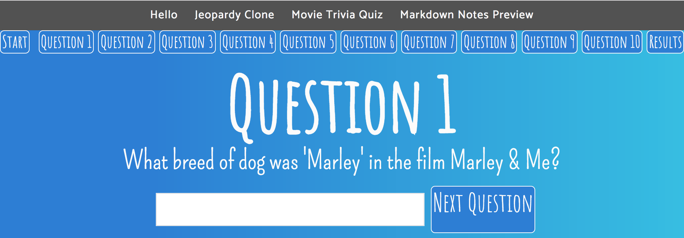
This combines 3 previous assignments into one large app using react and redux. The components and actions for each app are moved into this directory, but there is one reducer and one state. There is at least 1 unit test per component and reducer action.
live version
Rock, Paper, Scissors Group Project

Rock, Paper, Scissors is a React-Redux project that allows a user to play rock, paper, scissors against a "computer". My contributions to the group project include: function to start a new match, function to display scores, event listeners, fixing errors, and CSS.
live version
Photo Album
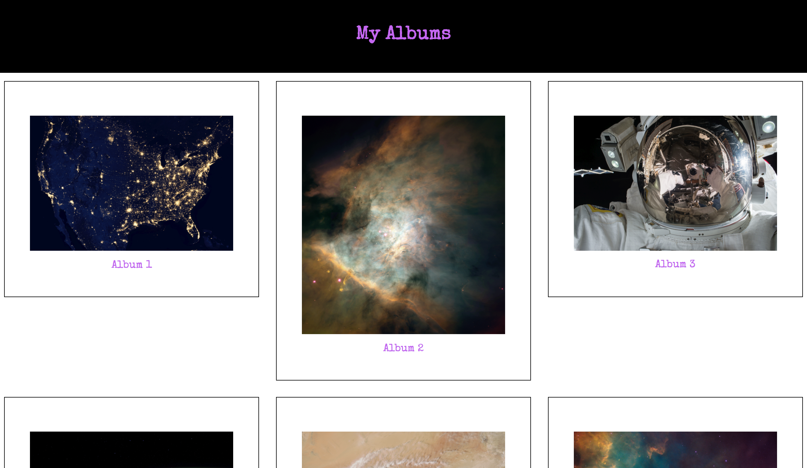
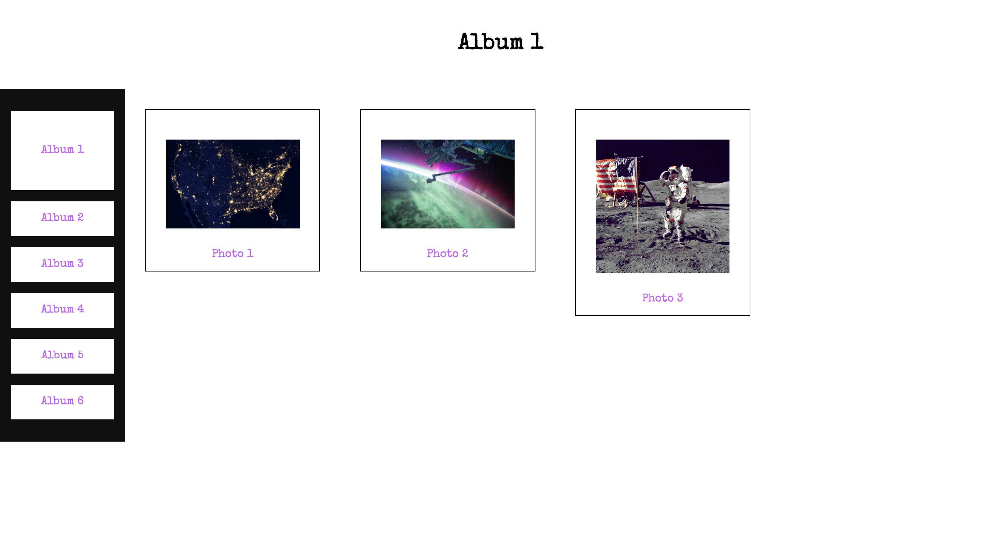
Photo Album is a single page application made using HTML, CSS, JavaScript, and jQuery.
live version
Pixel Perfect Project
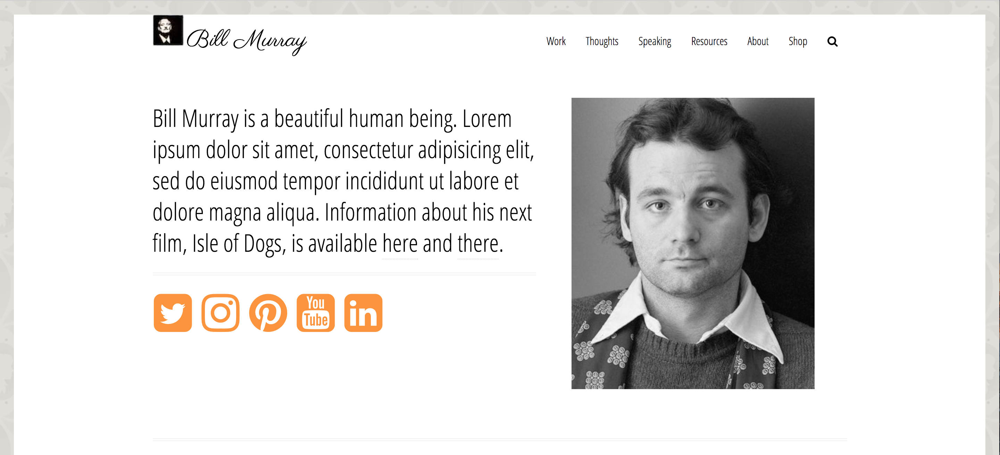
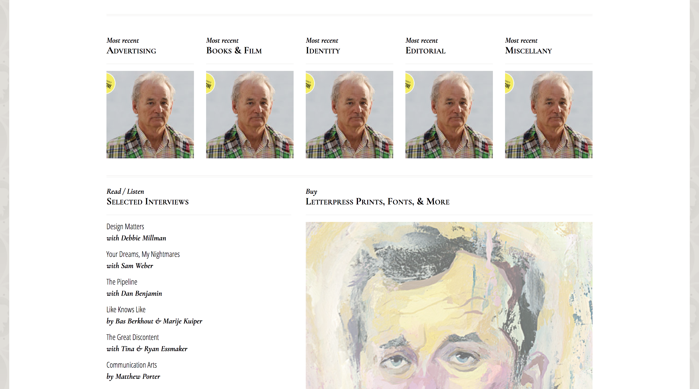
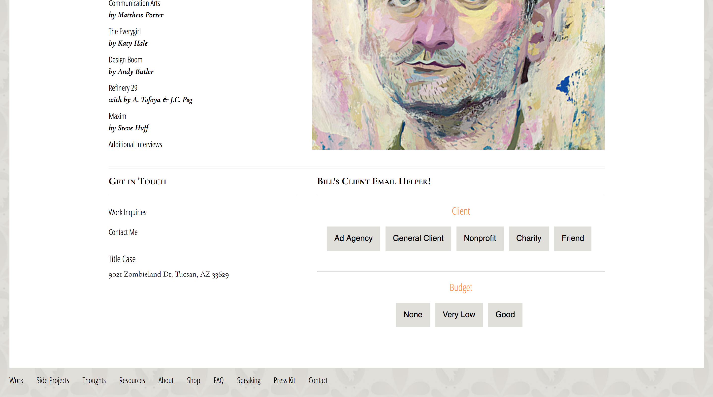
Pixel Perfect is the third assignment at The Iron Yard. I chose Jessica Hische’s Website to learn about HTML and CSS. This might be my favorite website. Ever.
live version
My First Website
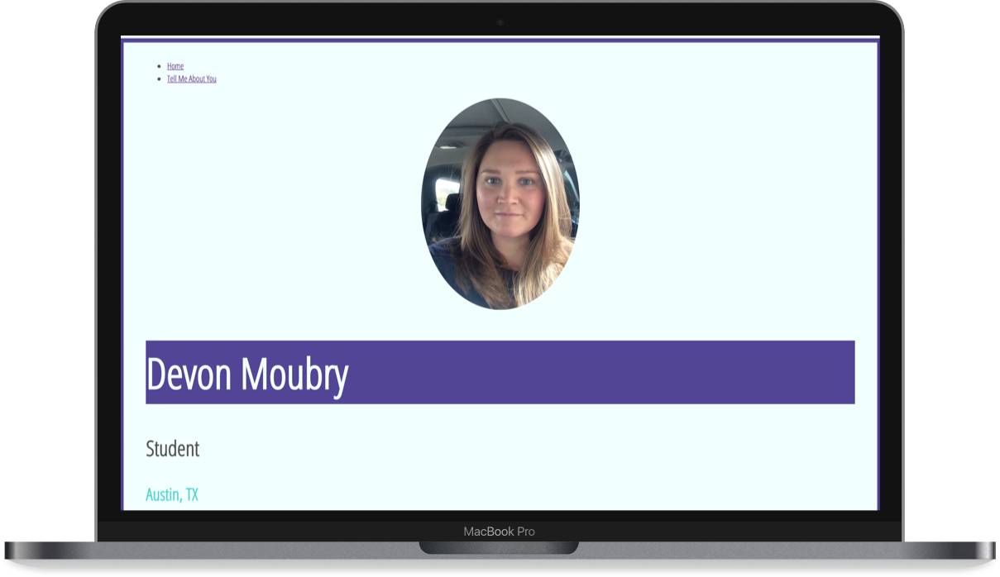
My First Website is the homework for the first day of The Iron Yard bootcamp. This is where it all began.
live version